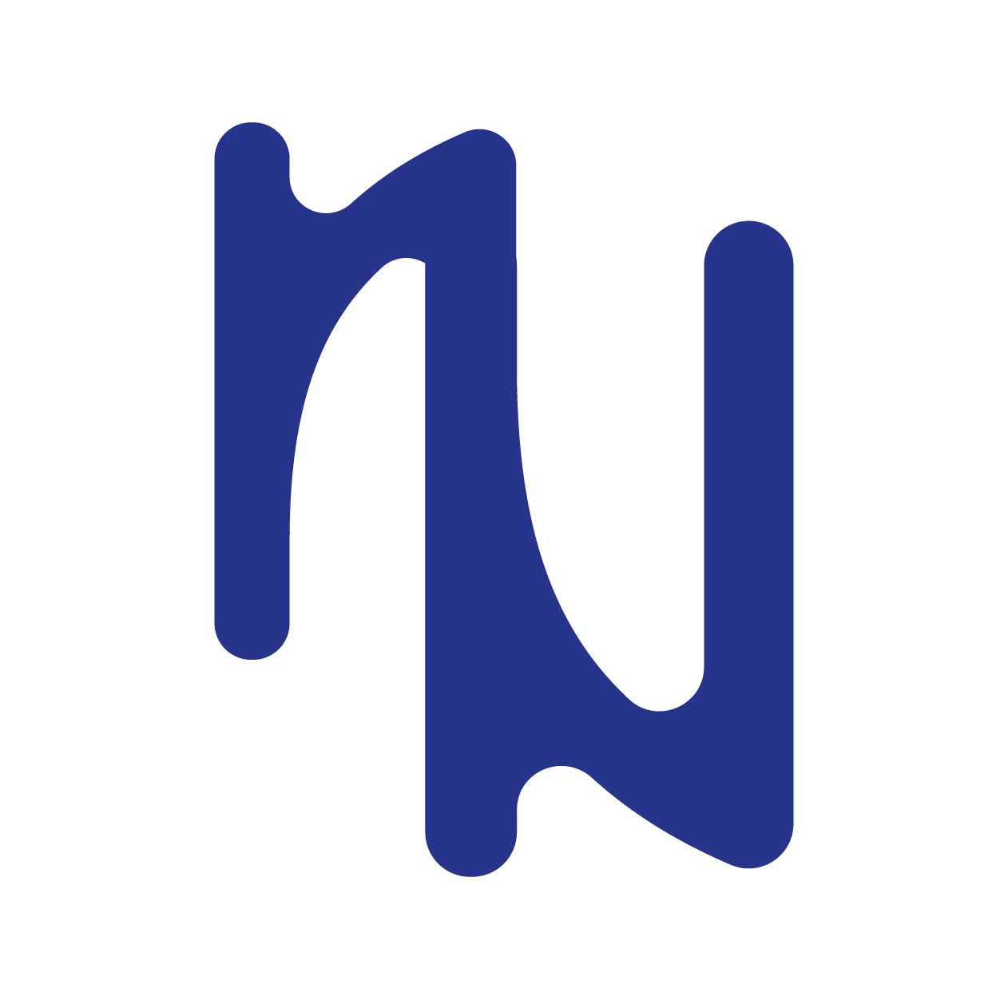
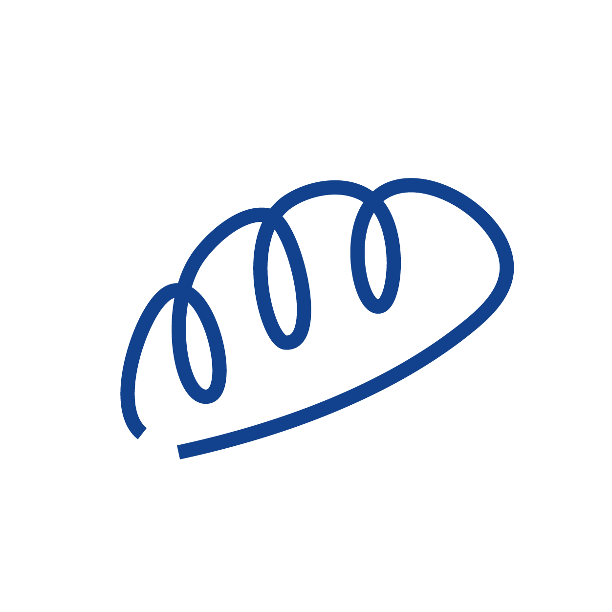
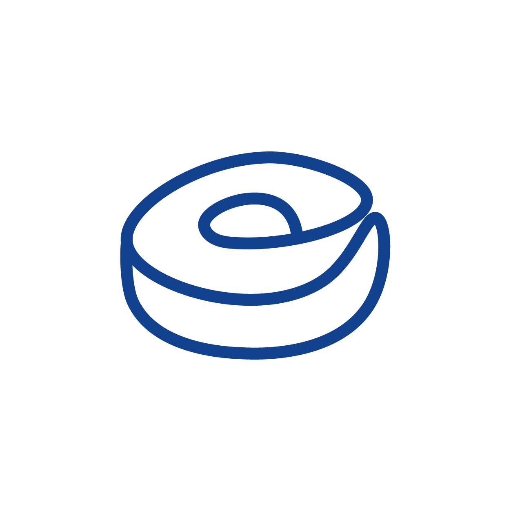
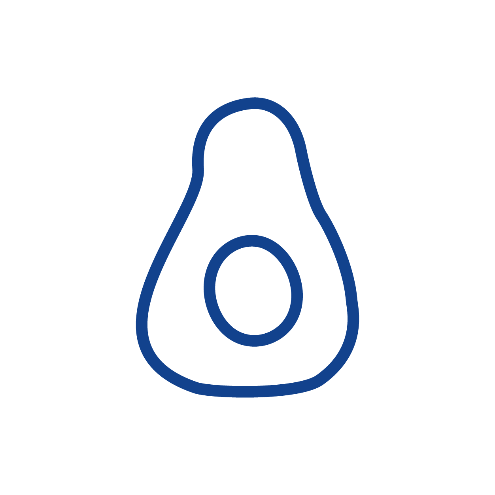
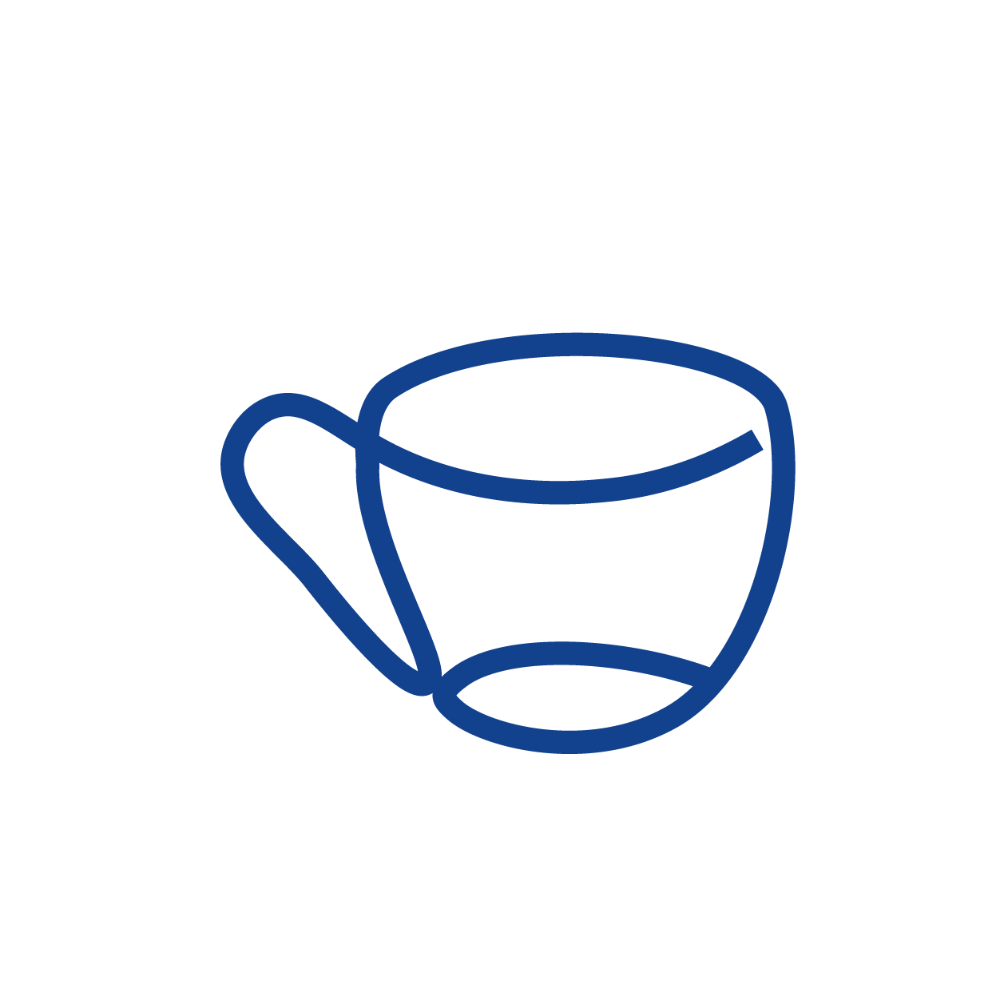
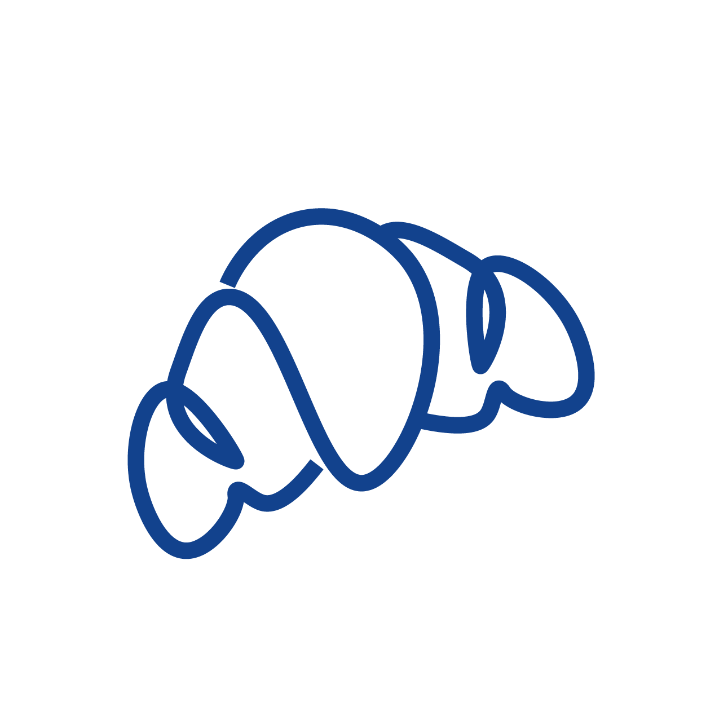
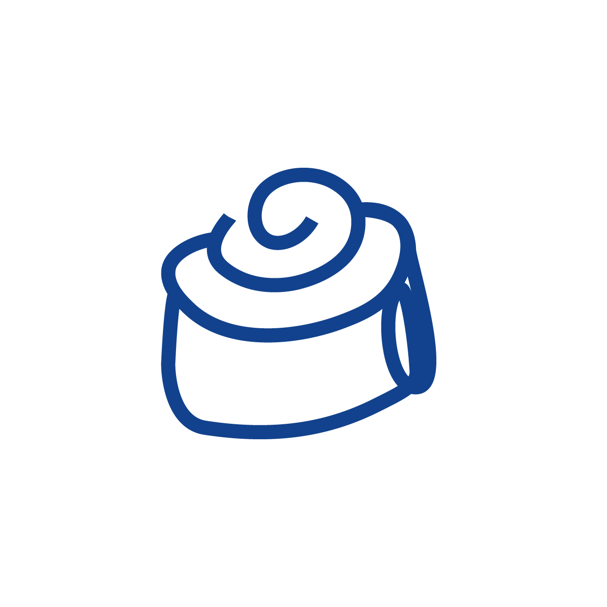
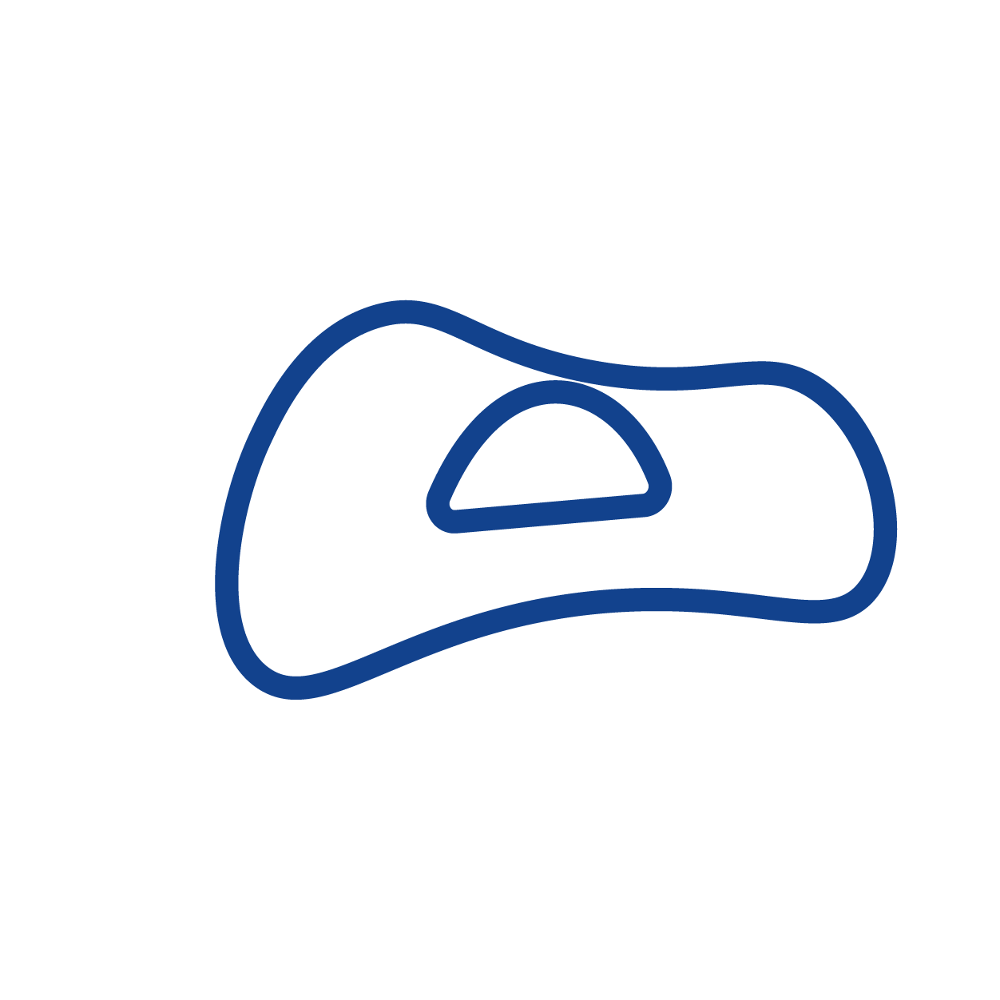
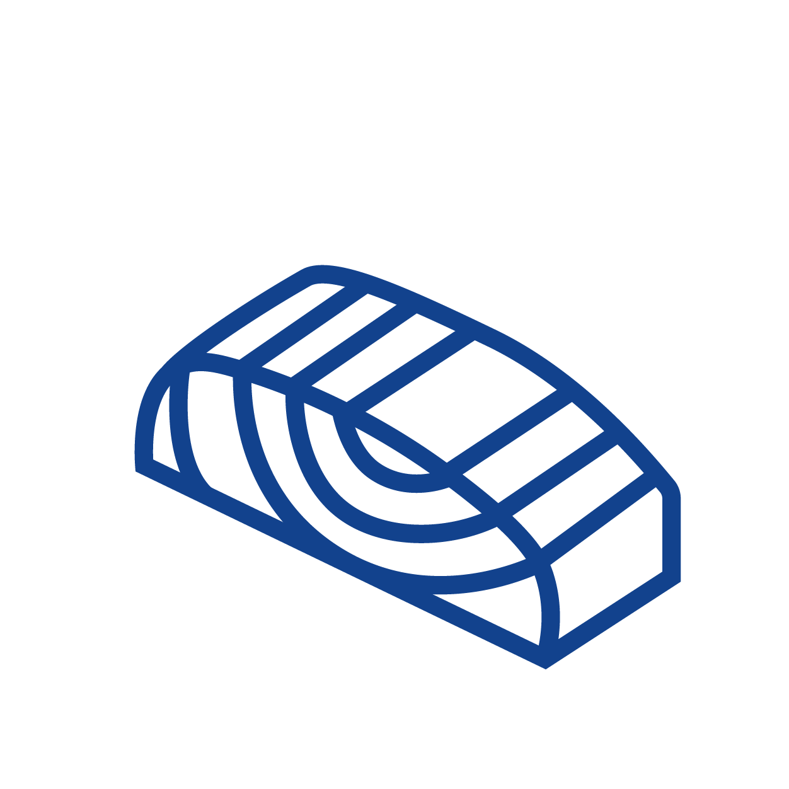

Dieses Dokument definiert die visuellen und gestalterischen Standards der Marke Noordlicht. Es dient als Referenz für alle kreativen und kommunikativen Massnahmen.
Schaffhausen, Schweiz
Inhalt
Index
01Markenidentität
02Logo
03Farben
04Typografie
05Abstände & Layout
06UI-Komponenten
07Icons & Illustrationen
08Fotografie
09Do's & Don'ts
10Technische Spezifikationen
01
Markenidentität
Konzept
Noordlicht ist ein skandinavisch inspiriertes Brunch-Café im Herzen von Schaffhausen. Der Name bedeutet «Nordlicht» – ein Phänomen, das Staunen, Wärme und Entschleunigung verbindet.
Die Marke vereint nordische Klarheit mit dem Schweizer Qualitätsanspruch: editoriales Layout, viel Weissraum, durchdachte Typografie und eine zurückhaltende, aber charakterstarke Farbwelt.
Kernwerte
HyggeGemütlichkeit & Wohlbefinden
QualitätHandgemacht, frisch, lokal
KlarheitMinimalistisch, strukturiert
WärmeEinladend, persönlich
EigenständigkeitCharakter & Haltung
Zielgruppe
Urbane Geniesser, 25–45 Jahre. Schätzen Qualität, Atmosphäre und authentischen Geschmack. Affin für Design und Nachhaltigkeit.
Tonalität
Freundlich-klar, nie aufdringlich. Kurze, poetische Sätze. Deutsch als Hauptsprache. Leichter skandinavischer Einschlag in Wortwahl und Stil.
Claim
«Ein Ort zum Ankommen, Durchatmen und Geniessen.»
02
Logo
Das Logo besteht aus dem Schriftzug «Noordlicht» in der proprietären Displayschrift sowie dem Bildzeichen. Es wird in drei Varianten eingesetzt – auf hellem, blauem und dunklem Untergrund.

Standard · Heller Untergrund
Weiss · Blauer Untergrund
Weiss · Dunkler Untergrund
✓ Korrekte Verwendung
Logo auf weissem oder sehr hellem Untergrund verwenden
Weisse Version auf blauem oder dunklem Untergrund
Schutzzone von mindestens der Höhe des «N» einhalten
Proportionen immer beibehalten
Mindestgrösse: 80px Breite digital / 25mm Print
✗ Verbotene Verwendung
Logo nicht strecken, quetschen oder verzerren
Keine Farbänderungen ausserhalb der definierten Varianten
Nicht auf unruhigen, gemusterten Hintergründen
Kein Schatten, Outline oder andere Effekte hinzufügen
Nicht unter der Mindestgrösse einsetzen
03
Farben
Die Farbpalette ist bewusst reduziert. Primärblau prägt die Marke, unterstützt von einem warmen Off-White und einem tiefen Dunkelton. Akzente entstehen durch Kontrast, nicht durch Farbvielfalt.
Primärblau
#28387F
Hauptfarbe · Headlines · Buttons
Blau Dunkel
#1E2C6A
Hover · Vertiefung
Warm Off-White
#F5F5F2
Menükarten · Hintergründe
Reinweiss
#FFFFFF
Sektionshintergrund
Text Dunkel
#1A1A1A
Fliesstext · Footer
Gedämpft
#6B6B68
Linie
#E2E2DE
Blue 10%
#28387F · 10%
Blue 6%
#28387F · 6%
Transparent
für Overlays
Variable
Hex
Verwendung
--blue
#28387f
Überschriften, Buttons, Icons, Akzente, Labels
--blue-dark
#1e2c6a
Hover-State auf Buttons und interaktiven Elementen
--bg
#F5F5F2
Menükarten, Hintergründe für Cards
--white
#ffffff
Sektionshintergründe, Navigation, Hauptflächen
--text
#1A1A1A
Primärer Fliesstext, Footer-Hintergrund
--muted
#6b6b68
Sekundärtext, Beschreibungen, Untertitel
--line
#e2e2de
Trennlinien, Rahmen, Tabellengrenzen
04
Typografie
Zwei Schriften bilden das typografische System: Noordlicht (proprietäre Display-Schrift) für emotionale Hauptaussagen und Inter (Google Fonts) für alle Fliess- und UI-Texte.
Display Schrift
Noordlicht
Datei: NOORDLICHT.otf Format: OpenType Einsatz: Ausschliesslich für Headlines und Brand-Elemente
Ein skandinavisch inspiriertes Café im Herzen von Schaffhausen. Geniesse Spezialitätenkaffee, entspannte Atmosphäre und hausgemachte Speisen.
Schrift
Inter
Grösse
1.1rem
Stil
Italic
Buchstabenabstand
0.08em
Einsatz
Subheadline, Zitat
Brunch · Coffee · Hygge
Element
Schrift
Grösse
Gewicht
Farbe
Hero-Titel
Noordlicht
clamp(4.5rem, 11vw, 12rem)
—
--blue
Section-Titel
Noordlicht
clamp(2.4rem, 4.5vw, 4rem)
700
--blue
Section-Label
Inter
0.68rem + 0.22em LS
600
--blue
Navigation
Inter
0.80rem + 0.12em LS
500
--text
Fliesstext
Inter
1.05rem · LH 1.85
300
#444
Menü-Name
Inter
0.95rem
600
--text
Menü-Beschr.
Inter
0.78rem · LH 1.5
400
--muted
Menü-Preis
Inter
1.05rem
700
--blue
Button
Inter
0.78rem + 0.15em LS
600
#fff
Footer-Copy
Inter
0.72rem
300
rgba(fff,.25)
05
Abstände & Layout
Das Layout basiert auf einem grosszügigen Weissraum-Prinzip. Alle Sektionen verwenden konsistente Innen- und Aussenabstände, die auf einem 8px-Raster aufgebaut sind.
Abstands-System
4px
8px
12px
16px
20px
28px
40px
48px
56px
64px
80px
100px
130px
Sektions-Padding
Element
Wert
Hinweis
Section-Padding
130px 80px
Desktop · vertikal / horizontal
Section-Padding Tablet
90px 48px
Bis 1100px Breite
Section-Padding Mobil
64px 24px
Bis 700px Breite
Max-Width Container
1280px
Inhalts-Container, zentriert
Navigation-Höhe
72px
Feste Höhe, sticky
Grid-Gap (About/Hours)
80–100px
Zwischen zwei Spalten
Menü-Karten-Gap
1px
Nahtlose Rastertrennung
Menü-Karten-Padding
22px 28px
Innenabstand jeder Karte
Button-Padding
17px 44px
Vertikal / horizontal
12-Spalten-Raster (1280px Container)
Spaltenbreite variabel · Rinne 8px · Seitenabstand 80px
0.68rem · 600 · 0.22em LS · uppercase · mit 36px Linie dahinter
07
Icons & Illustrationen
Hand gezeichnete Food-Icons dienen als dekoratives Element im Hintergrund aller Sektionen. Sie verstärken die verspielt-skandinavische Atmosphäre, ohne den Inhalt zu stören.

Icon 01
Icon 02

Icon 03

Icon 04

Icon 05

Icon 06

Icon 07

Icon 08

Icon 09
Auf Blau
Eigenschaft
Wert
Grösse
120px Breite
Opacity (Hell)
0.11 · mix-blend-mode: multiply
Opacity (Blau)
0.15 · mix-blend-mode: screen
Rotation
Zufällig ±12° pro Icon
Raster horizontal
220px zwischen Mittelpunkten
Raster vertikal
200px zwischen Mittelpunkten
Versatz (gerade Reihen)
½ Spaltenabstand horizontal
Versatz (ungerade Spalten)
½ Reihenabstand vertikal
Reihenfolge
Zufällig gemischt (Fisher-Yates Shuffle)
08
Fotografie
Fotografie zeigt Authentizität: echte Momente, natürliches Licht, warme Töne. Keine übersättigten Filter, kein Stockfoto-Look.